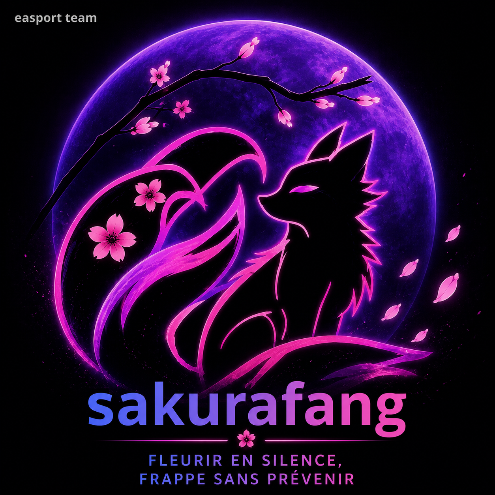

01 / TACTIQUEV
VALORANT
Précision, stratégie et communication au cœur du jeu.
PREMIERCONSOLE

SAKURAFANGCOMMUNAUTÉ GAMING · PROJET E-SPORT
Bienvenue chez SAKURAFANG, une communauté de joueurs réunis par la passion, l’envie de progresser et le plaisir de construire quelque chose ensemble.
01 / NOTRE AMBITION
SAKURAFANG souhaite évoluer d’une communauté de passionnés vers une véritable structure e-sport.
Notre ambition est de nous développer dans l’univers compétitif, de créer des équipes organisées et de donner à chaque joueur l’occasion de trouver sa place, de progresser et de s’épanouir.
Nous voulons avancer étape par étape : repérer les talents, travailler la communication, renforcer la cohésion et participer à des expériences compétitives. La performance compte, mais elle se construit avec le respect, l’investissement et l’esprit collectif.
02 / NOS UNIVERS
Retrouvez les pôles de jeu et leurs différentes branches.
Précision, stratégie et communication au cœur du jeu.
Vitesse, mécanique et jeu collectif.
Coordination, complémentarité et stratégie d'équipe.
03 / RESTONS CONNECTÉS
04 / SUIVEZ NOS DIRECTS
Retrouvez ici les annonces de live de la team. Lorsqu'un direct est lancé, un ping Discord pourra prévenir la communauté automatiquement après activation de l'intégration.
Activer les notifications sur Discord ↗À noter : GitHub Pages héberge un site statique et ne peut pas, à lui seul, détecter le lancement d'un live ni envoyer un message Discord. Une automatisation externe (bot ou service relié à la plateforme de streaming) sera nécessaire. Voir le fichier README pour la mise en place.
05 / REJOIGNEZ L'AVENTURE
Nous recrutons à tous les niveaux. La motivation, le respect et l'envie de progresser comptent autant que le niveau de jeu.
PC & Console · Tous niveaux
Candidater sur Discord ↗Tous niveaux · Tous profils motivés
Candidater sur Discord ↗Équipe Overwatch · Tous niveaux
Candidater sur Discord ↗Organisation, animation et accompagnement
Candidater sur Discord ↗06 / LE POINT DE RENDEZ-VOUS
Discussions, annonces, recrutement, émissions et organisation : toute la communauté se retrouve sur Discord.
REJOINDRE SAKURAFANG ↗